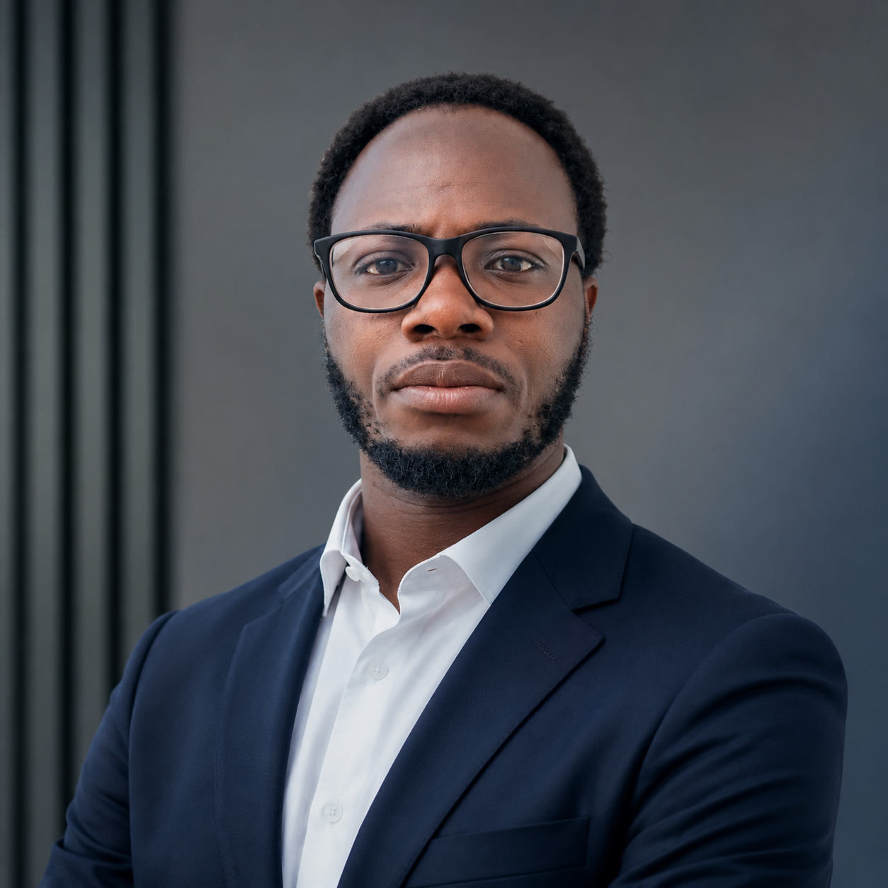

01
Research · NLP
Multilingual Backpack LMs
Exploring multilingual language models, from training to comparative evaluation.
View on GitHub ↗AI Researcher · artificial intelligence
I am a PhD researcher in artificial intelligence at La Rochelle Université (L3i), conducting a CIFRE thesis in collaboration with Alouette AI.

01 · Background
My path lies at the intersection of applied mathematics and artificial intelligence. After completing a Master's degree at the Institut de Mathématiques et de Sciences Physiques (IMSP), Benin, and an AI for Science Master's degree at AIMS South Africa, I am now pursuing this path as a PhD researcher at L3i, La Rochelle Université.
02 · Selected work
01
Research · NLP
Exploring multilingual language models, from training to comparative evaluation.
View on GitHub ↗02
Data · visualisation
A dashboard for exploring time series and generating forecasts.
View project ↗03
Education · learning resources
A curated collection of learning materials in Python, LaTeX and mathematics.
Browse materials ↗03 · Research interests
04 · Research environment
Google ADK · LangChain · LangGraph
Langfuse · OpenTelemetry · OpenInference
LLMs · Ollama · llama.cpp · Hugging Face · Unsloth · OpenRouter
pm4py